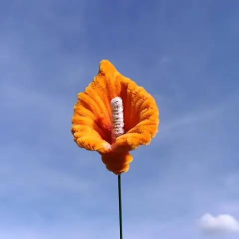

Fleurs à l’unité · fait main
Arum orange en fil chenille
8 € la fleur
Une fleur éternelle, emballée et prête à offrir, avec sa carte de vœux.
La création
Un arum orange en fil chenille, façonné à la main dans mon atelier des Ardennes. Il ne fane pas, ne demande pas d’eau et se garde des années, dans sa pochette transparente fermée d’un nœud.
Ce qui est compris
- Façonné à la main, à la commande, dans mon atelier de Signy-l’Abbaye.
- Emballé dans une pochette transparente fermée d’un nœud.
- Une carte de vœux offerte, avec le message de votre choix.
- Sur demande, la fleur peut être fixée à l’intérieur d’un bocal transparent, pour 5 € de plus : protégée de la pluie et du vent, elle peut fleurir une sépulture.
Le langage des fleurs
Dans le langage des fleurs, l’orange rayonne d’enthousiasme et d’énergie. Dans le langage des fleurs, l’arum représente l’élégance et la beauté raffinée ; on le retrouve souvent dans les bouquets de mariage.
Commander
- Ouvrez cette création sur le site et ajoutez-la à votre sélection.
- Écrivez le message de votre carte de vœux, offerte.
- Envoyez votre demande : je vous confirme la date. Retrait gratuit à l’atelier de Signy-l’Abbaye, ou livraison à 5 € jusqu’à 15 km et 10 € jusqu’à 25 km.